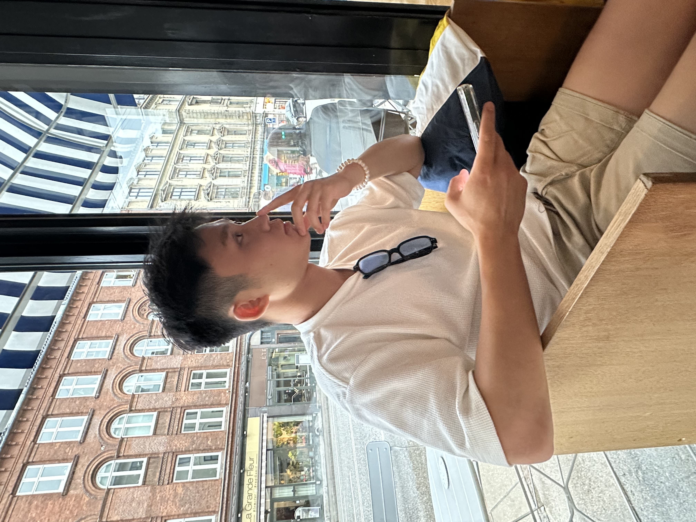

About Me
Hi, I'm Frank Mayfield(Yuxuan Xiang), I enjoy travelling to different places around the world and experiencing new cultures. I study Data Science at the University of Bristol (2023-2026), with my main focus on software engineering and machine learning.
Travels
Click on the locations below to find out the details of my adventures.
Projects
More projects can be found on Frank’s GitHub.
Sports
My favorite sport is tennis and I currently serve as the Advanced Team Captain in the University of Bristol Tennis Club